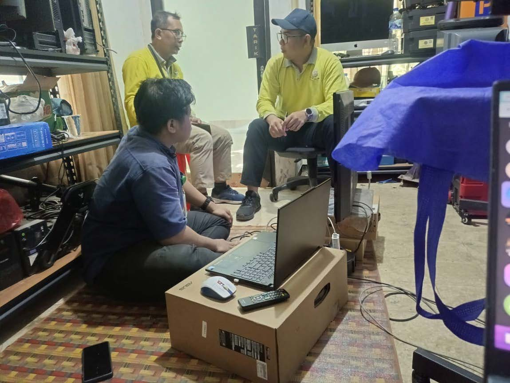
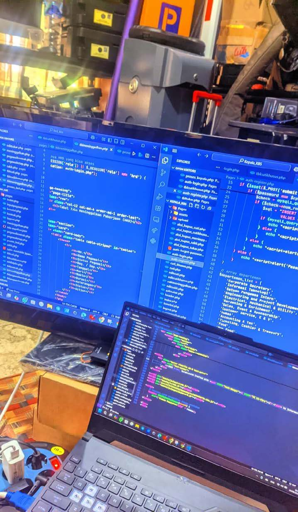
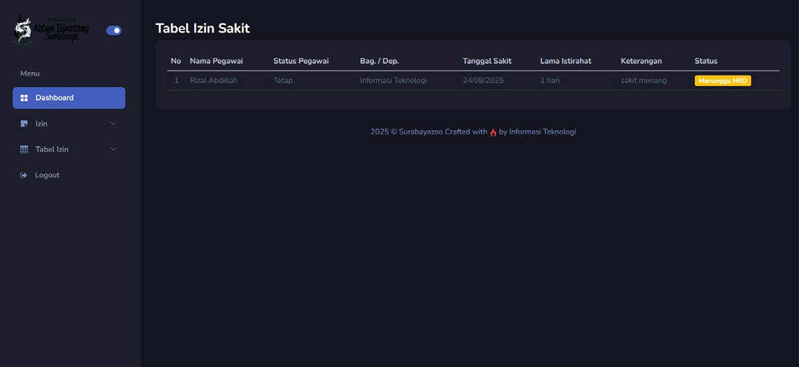
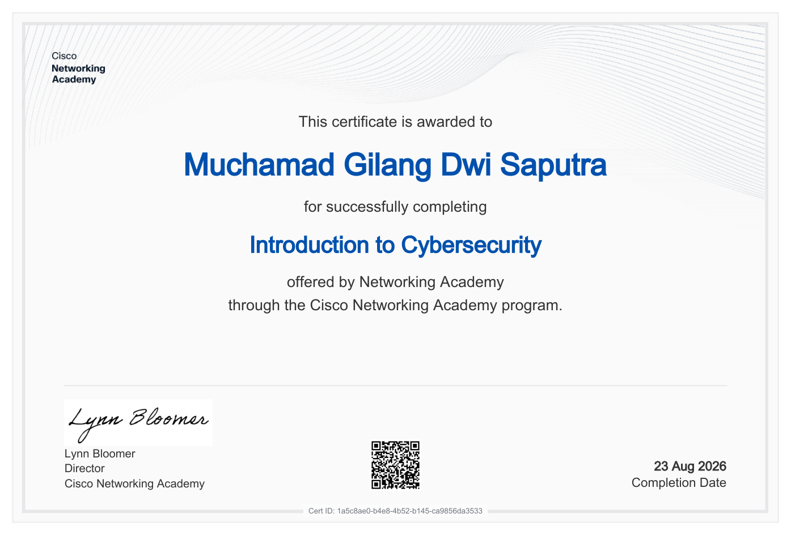
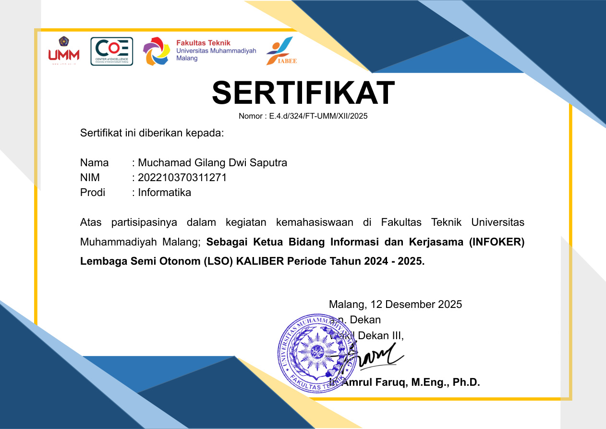

EDUCATION
Bachelor of Informatics
Universitas Muhammadiyah Malang
2022 — 2026 · GPA 3.83 / 4.00
PROFESSIONAL PORTFOLIO · 2026
Computer Science graduate with practical experience in IT support, network troubleshooting, web development, role-based systems, and security-focused technical projects.

PROFESSIONAL FOCUS
Infrastructure · Security · Networking
01 — PROFESSIONAL PROFILE
I focus on network infrastructure, network security, cybersecurity, and practical information systems. My work combines hands-on troubleshooting, web development, role-based access control, Linux, Python, and controlled security testing.
I have developed internal web applications, supported operational IT environments, worked with LAN/Wi-Fi infrastructure, MikroTik and Huawei devices, and completed technical security projects involving network analysis and web application testing.
EDUCATION
Universitas Muhammadiyah Malang
2022 — 2026 · GPA 3.83 / 4.00
TECHNICAL STACK
TCP/IP, LAN, Wi-Fi, VLAN, Routing, MikroTik, Linux, Nmap, Wireshark, Python.
RESEARCH
Published research comparing Bcrypt, Argon2, and PBKDF2 for web-based authentication security.
02 — EXPERIENCE
21 JULY 2025 — 21 AUGUST 2025
PD Taman Satwa Kebun Binatang Surabaya · IT Team
Supported operational IT activities while contributing to network troubleshooting, end-user technical support, device management, and development of integrated internal web applications.
KEY CONTRIBUTIONS



31 MAY 2025 · LSO KALIBER
Ngoding Cerdas Bareng Python dengan Clean Code, Secure Code dan AI untuk Produktivitas
Led committee coordination and end-to-end event execution, covering team workflow, speaker coordination, participant management, publication, and external communication.
03 — FEATURED PROJECT
An integrated internal web system built with PHP and MySQL, designed around differentiated organizational roles, access control, approval workflows, and connected data management.
Application logic
Integrated data layer
Role-based access
Approval & validation

Employee-side interface for submitting and accessing services based on the assigned user role and workflow.

Administrative interface for managing employee information, leave records, and approval-related workflows.

Management-level dashboard for broader information monitoring and oversight of organizational system data.
SYSTEM OVERVIEW
The system separates interfaces and permissions according to organizational responsibilities. Security-related implementation includes authentication, session management, role-based access control, input validation, and approval workflows.
04 — RESEARCH & PUBLICATION
SINTA 3 · 2026
Jurnal Informatika: Jurnal Pengembangan IT · Vol. 11, No. 2
Single-author research comparing Bcrypt, Argon2, and PBKDF2 in the context of authentication security and password hashing for a web-based employee information system.
PUBLICATION DETAILS
DOI
10.30591/jpit.v11i2.10280
Author: Muchamad Gilang Dwi Saputra
05 — TECHNICAL PROJECTS
01
Designed network simulations with VLAN, routing, access control, network segmentation, and connectivity testing.
02
Built local simulations involving honeypot and port scanning activities and analyzed network traffic and activity.
03
Performed controlled security testing involving SQL Injection, brute-force, XSS simulation, and mitigation analysis.
04
Practiced WordPress security testing in a controlled environment, including configuration analysis and post-exploitation concepts.
06 — SKILLS
Computer Networking · TCP/IP · LAN · Wi-Fi · VLAN · Routing · MikroTik · Cisco Packet Tracer · Network Troubleshooting
Network Security · Web Application Security · Penetration Testing · Nmap · Wireshark · Password Hashing
Python · PHP · MySQL · Authentication · Session Management · Input Validation
Linux · Windows · Basic system administration and technical troubleshooting
Leadership · Communication · Teamwork · Project Coordination · Problem Solving · Analytical Thinking · Time Management
Bahasa Indonesia — Active
English — Basic
07 — CREDENTIALS

CISCO NETWORKING ACADEMY
Foundational cybersecurity learning covering core security concepts and digital risk awareness.

LSO KALIBER
Documentation related to organizational activity, leadership, and committee participation.
08 — CONTACT
Open for professional networking, technical collaboration, cybersecurity projects, and career opportunities.